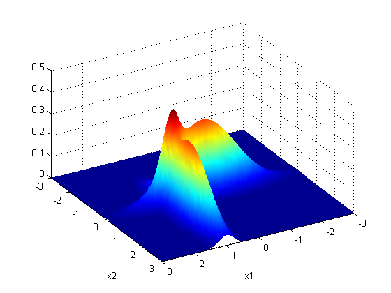

Plot Mixtures of 2, 2D Gaussians with 1,2, and 3 modes Respectively.
mixweight = [0.5; 0.5];
model.K = 2;
for M=1:3
switch M
case 3,
mu = [0 0; 1 1]';
Sigma(:,:,1) = [1 0; 0 0.05];
Sigma(:,:,2) = [0.05 0; 0 1];
xrange = [-3 3 -3 3];
case 2,
mu = [-1 -1; 1 1]';
Sigma(:,:,1) = 0.5*eye(2);
Sigma(:,:,2) = 0.5*eye(2);
xrange = [-3 3 -3 3];
case 1,
mu = [-0.5 -0.5; 0.5 0.5]';
Sigma(:,:,1) = 0.5*eye(2);
Sigma(:,:,2) = 0.5*eye(2);
xrange = [-3 3 -3 3];
end
plotSurface(@(x)exp(mixGaussLogprob(mu, Sigma, mixweight, x)), xrange);
shading interp
view([118, 46])
xlabel('x1'); ylabel('x2');
printPmtkFigure(sprintf('gmmMultiModes%d', M))
end
view([150, 42])
